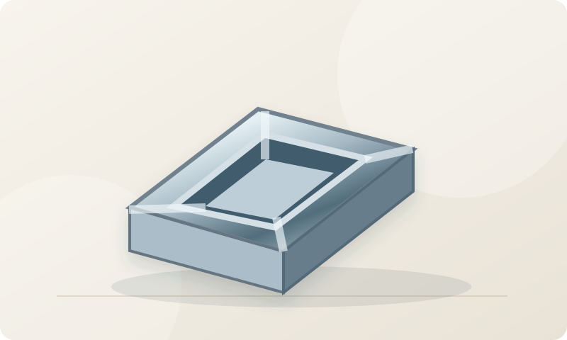
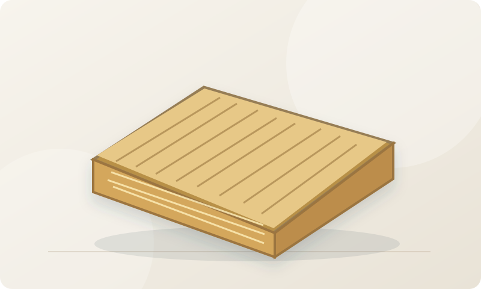
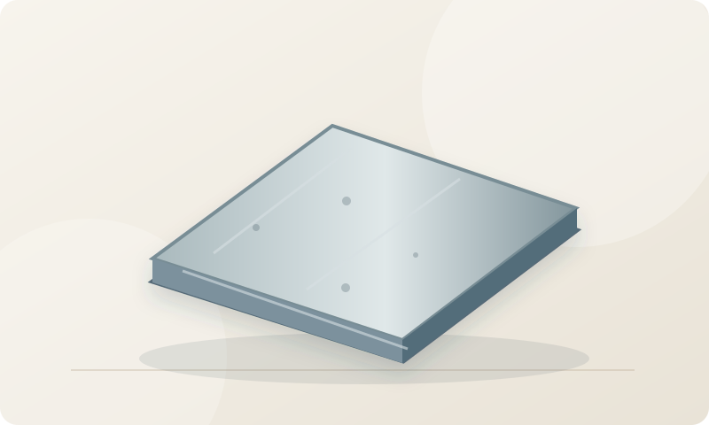

01
Performance documents
Review test scope, standard edition, product identity and the issuing laboratory.
For international project buyers and importers: compare material specifications and identify documents to request before contacting manufacturers. Local project compliance still requires qualified review.
Practical concepts to help buyers ask better questions before requesting quotes.
Review test scope, standard edition, product identity and the issuing laboratory.
A component's performance may depend on its installed assembly.
Understand tolerances, packaging, shipping damage and acceptance criteria.
Illustrative product types, not live inventory, prices or certified supplier offers.
Original illustrations for identification only; not actual product photos or supplier offers.
Dense ceramic tile commonly specified for floors and interior finishes.

Extruded profiles used in framing, interiors and building envelopes.

Fiber insulation used for thermal and acoustic applications in assemblies.

Cement-based panel for selected facade and interior applications.
Factory assembled glazing panes with a sealed cavity.
Sheet or liquid-applied barrier forming part of water-management systems.
Reference descriptions are educational and require confirmation against current specifications, local regulations and manufacturer documentation. Product listings do not imply an established supplier relationship.
Short checklists covering technical questions and common sourcing mistakes.
A certificate is meaningful only if it matches the product and intended application.
Physical dimensions and packing practices can change the real landed cost.
Individual material labels do not automatically establish entire assembly compliance.
We are designing a permission-based manufacturer directory. Profiles will require source attribution, business identity checks and clear verification status.
Supplier onboarding and procurement inquiries are not yet open. No factory is currently endorsed here.
Answers explain what this information can and cannot tell you.
No. Approval depends on jurisdiction, application and the full installed system.
No. Supplier onboarding is not yet open.
Not currently. These are representative material types, not live catalog offers.